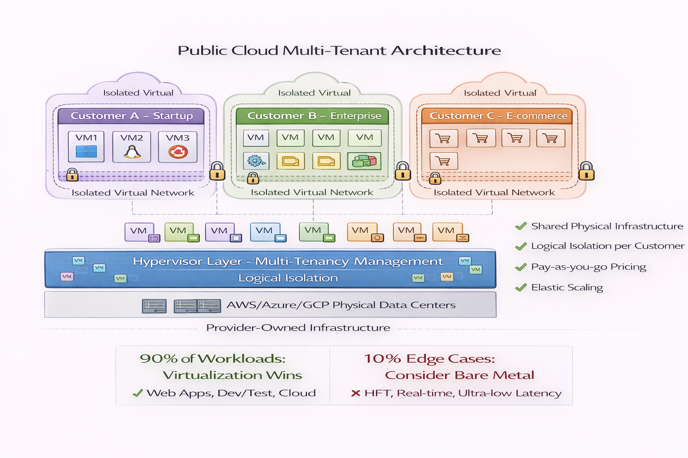
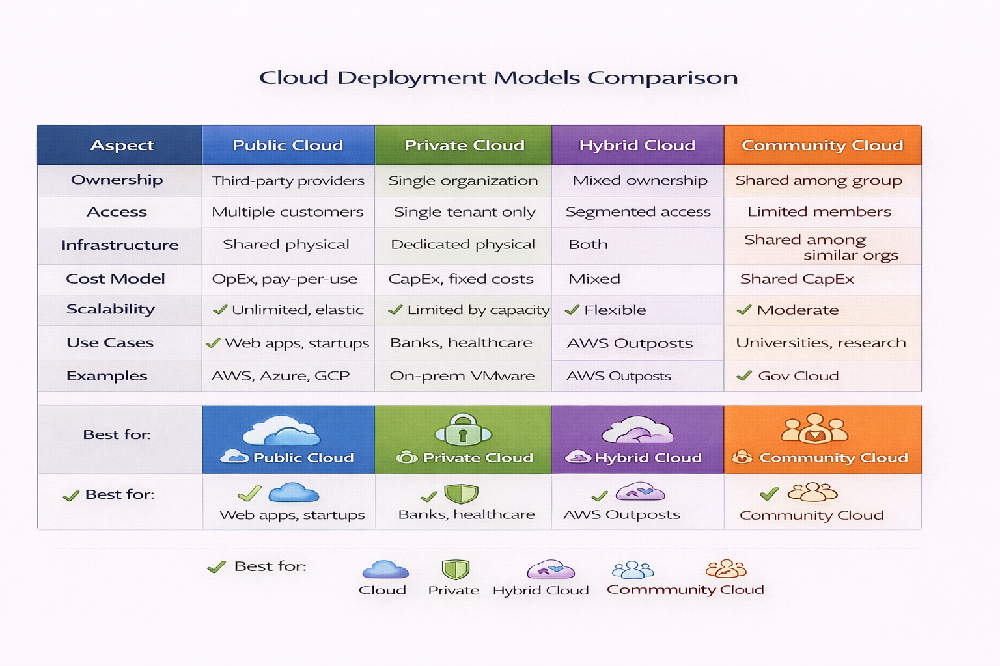

Cloud deployment models define the ownership structure, access control, and operational responsibility for cloud infrastructure. These models determine who manages the underlying resources and who can consume the services.
Public Cloud
Infrastructure owned and operated by third-party cloud service providers, delivered over the public internet with resources shared across multiple tenants.
Technical Characteristics:
- Multi-tenant architecture with logical isolation
- Provider-managed physical infrastructure
- Consumption-based pricing model
- Elastic resource scaling
- Global infrastructure footprint
Primary Use Cases: Web applications, development/test environments, workloads with variable demand, services requiring global distribution, startups and organizations seeking minimal capital expenditure.
Major Providers: Amazon Web Services (AWS), Microsoft Azure, Google Cloud Platform (GCP), IBM Cloud, Oracle Cloud Infrastructure (OCI).

Figure 1: Public Cloud Architecture - Multi-tenant infrastructure model
Private Cloud
Dedicated infrastructure provisioned for exclusive use by a single organization, operated either on-premises or by a third party, providing enhanced control and customization.
Technical Characteristics:
- Single-tenant environment
- Full infrastructure control
- Customizable security policies
- Predictable performance characteristics
- Capital expenditure model or dedicated hosting
Primary Use Cases: Highly regulated industries (finance, healthcare, government), applications with strict data residency requirements, workloads requiring predictable performance, organizations with significant existing infrastructure investments.
Technology Stack: VMware vSphere, OpenStack, Microsoft Azure Stack, AWS Outposts (hybrid approach).
Hybrid Cloud
Integrated environment combining public and private cloud infrastructure, connected through networking to enable data and application portability, workload orchestration, and unified management.
Technical Characteristics:
- Orchestration between on-premises and public cloud
- Network connectivity (VPN, Direct Connect, ExpressRoute)
- Unified identity and access management
- Workload portability and data synchronization
- Mixed cost structure (CapEx and OpEx)
Primary Use Cases: Cloud bursting for peak demand, data residency compliance with cloud elasticity, gradual cloud migration strategies, disaster recovery with cloud failover, separating sensitive and non-sensitive workloads.
Implementation Approaches: AWS Outposts, Azure Arc, Google Anthos, VMware Cloud on AWS.
Community Cloud
Infrastructure shared among organizations with common requirements, concerns, or regulatory obligations, operated collaboratively or by a third party.
Technical Characteristics:
- Limited multi-tenancy (defined community members)
- Shared governance and compliance framework
- Cost distribution among participants
- Industry-specific configurations and standards
Primary Use Cases: Research institutions sharing computational resources, healthcare organizations with HIPAA compliance, government agencies with FedRAMP requirements, financial institutions with shared regulatory obligations.

Figure 2: Cloud Deployment Models Comparison
Deployment Model Selection Criteria
| Criterion | Public Cloud | Private Cloud | Hybrid Cloud | Community Cloud |
|---|---|---|---|---|
| Control | Limited | Maximum | Balanced | Shared |
| Cost Structure | OpEx, pay-per-use | CapEx, fixed costs | Mixed | Shared CapEx |
| Scalability | Unlimited | Limited by capacity | Flexible | Moderate |
| Security Control | Provider-managed | Full control | Segmented | Collaborative |
| Customization | Limited | Extensive | Variable | Standards-based |
| Maintenance | Provider responsibility | Organization responsibility | Split responsibility | Shared responsibility |